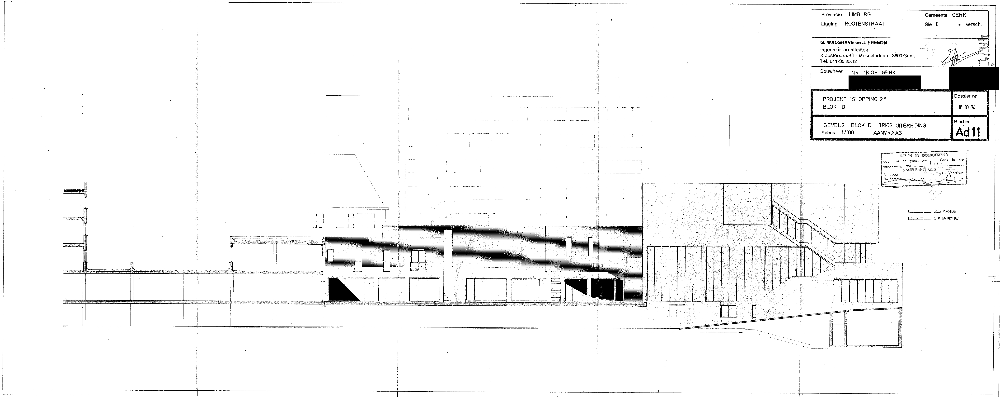

Werkhuis

Werkhuis is a creative community hub founded by Geraas Collectief in the heart of Genk. A place to come together, to meet and learn from each other. A house where we share and realize ideas, where we experiment and make. A place where young designers and artists can develop and present themselves. Werkhuis serves as a platform for inter disciplinary projects.
The location offers more than thirty established residents a space to create. An exposition space and enough room to organize workshops, readings, events and club nights.


Chaos atelier is a creative collective founded by Lola Ilegems and myself in 2019. Within the collective, we strived to share our contemporary aesthetic with the outside world.
The choice and application of the designs always relied on the creativity of the user. For example the 'bead' is a jewel that can be used as a necklace and earring but equally in a hairstyle, on shoelaces or other necklaces.
Chaos Atelier
Club Dérive
The lockdown during the covid-19 months carried the shutdown of established clubs which led to the risk of a dying club culture. Temporary club nights arose from this uncertainty. These nights are organized by club collectives that operate bottom-up and do-it-yourself.
The club is a dark space filled with light and sweating bodies. It is a complete experience of discovery, experimentation with identity, and most importantly, of being able to experience freedom. I was intrigued by this second world, and especially by the transition to it. It soon became clear that the night needed another researching and designing story. Therefore, we transformed our intuition and experience into an analysis and design tool.
During the research we investigated the influence of the environment and the movement through this environment on the mental, which is called psychogeography. The movement through the environment was analyzed resulting in intuitive maps consisting of organic forms. We applied the design principles of Guy Debord and Constant Nieuwenhuys during the design process to bring a combination of modular structures and flow to life. The result, Club Dérive, is a night-after-night transformative club scenography that takes clubgoers into an environment that encourages play and discovery. Immerse yourself in a second world and experiment with identity and letting go of yourself.